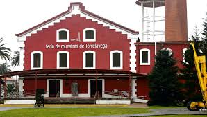

El complejo fabril se inauguró en diciembre de 1899
y se convirtio en una de las grandes industrias de Torrelavega con su simbólica chimenea de 50 metros El emblemático edificio fue azucarera,
fábrica de leche condensada y Feria de Muestras

|
Viaverde
Torrelavega
|